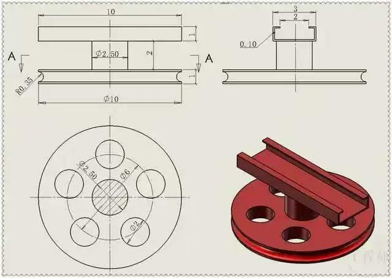
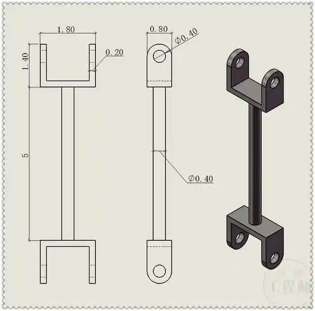
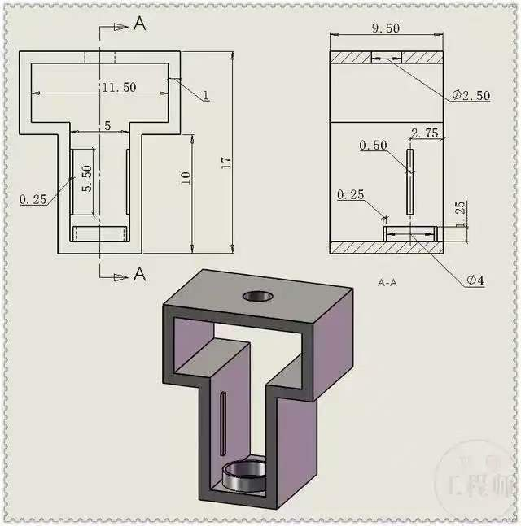
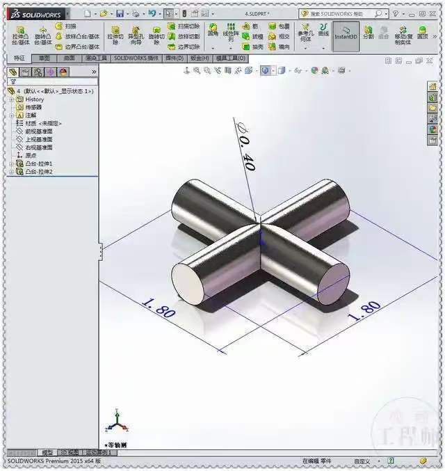
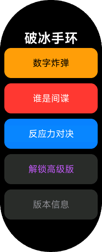
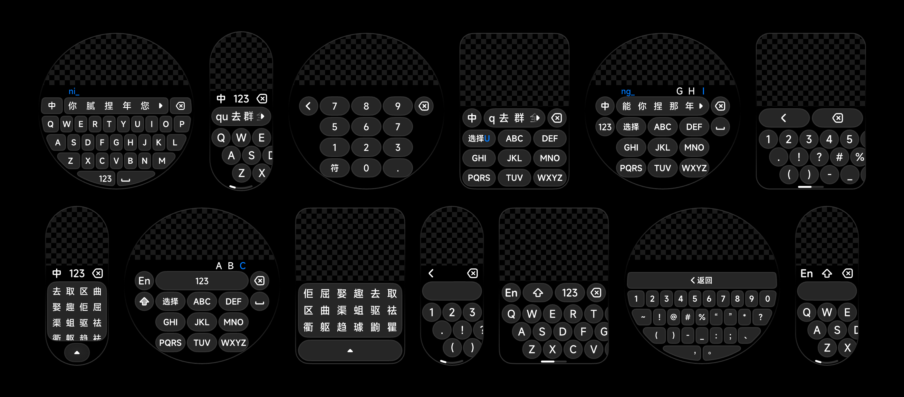
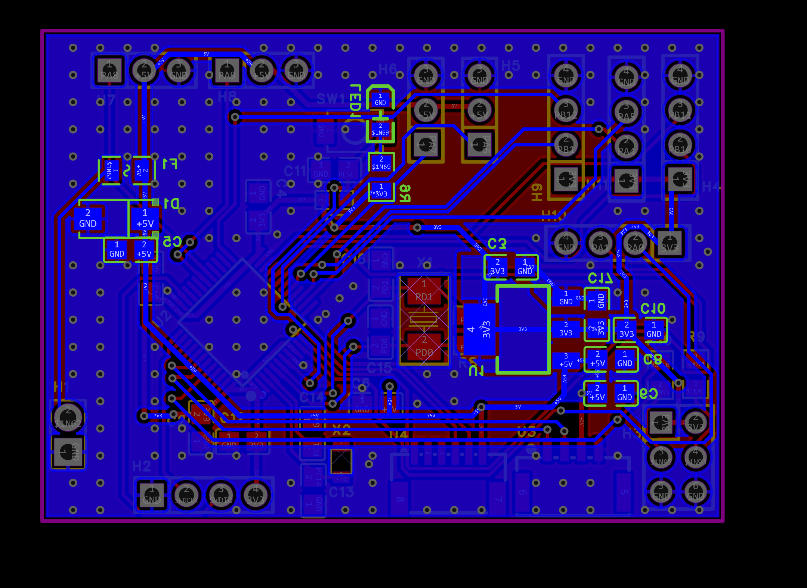
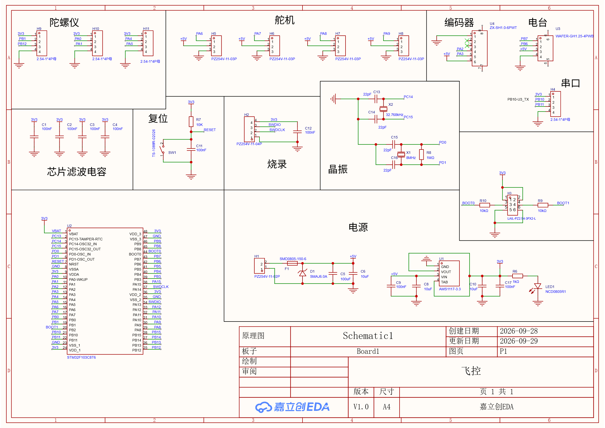

从底层物理感知到具身智能，
用工程闭环让每一个想法落地。
我是 徐凯睿，郑州大学 2026 级自动化本科生。高中时期因兴趣迈入软硬件探索，高三制作 ESP8266 环境采集；高考后暑假集中攻克 STM32 驱动、双芯总线协同与立创 PCB 打板闭环。 善于把 AI 作为放大镜与工程加速器，已独立跑通小米手环生态产品的商业化交付，并向水杉输入法与拾光课程表等开源项目贡献核心代码。 目前正推进双足实验室考核飞控板的首件贴片与驱动调通。
意向方向: 工业测量 & 3D (押宝具身智能的物理空间锚点)
很多人将工业测量理解为工厂质检台上的静态卡尺打表；但如果放在具身智能（Embodied AI）的视角下，工业测量与 3D 视觉是整个物理交互回路中不可替代的度量衡。
大语言模型赋予了机器强大的常识理解与推理能力，但大模型无法凭一张平面图片感知物体相差 0.05mm 的装配间隙，也无法直接得出 6D 空间位姿（位置与法向角度）。没有工业级 3D 测量作为空间锚点，机械臂和仿生机器人就只能在物理世界盲摸。
- • 信号与硬件层：熟练掌握 PCB 原理图与布线闭环，理解传感器微弱信号的高保真采集、低噪声供电与总线防死锁机制。
- • 机械与几何认知：入门 SolidWorks 零部件建模（连杆、导轨、十字轴装配），对三维几何公差与物理干涉有直观认知。
- • 决策与闭环感知：独立组织并跑通数千局多智能体对抗评测，深刻理解“策略高度依赖确定性状态输入”这一法则。
- 1. 点云配准与位姿估计：系统学习 3D 点云处理（PCL/OpenCV 深度图），探索工件的高精度 6D 位姿识别。
- 2. 手眼标定与闭环控制：攻克机器人手眼协同标定算法，让机械末端不仅看得清，更能做到亚毫米级闭环位姿纠偏。
- 3. 软硬一体台架实测：结合自身画板与结构基础，协助学长搭设实际工业测量试验台，完成工程化真机测试。
自驱探索史：从高三物理感知到双芯协同中枢
SmartHome DualCore 双芯控制中枢
为了避免单片机在处理高开销 Wi-Fi 协议栈时导致 UI 渲染掉帧与死锁，自主架构了 ESP8266 + STM32F103C8T6 双芯解耦系统：
- • ESP8266：负责网络协议栈、和风天气 Gzip 解压 (Puff 算法) 与华为云 IoTDA 设备影子同步。
- • STM32F103：专职零阻塞 DMA OLED 界面渲染、MPU6050 六轴传感器与休眠管理。
- • 总线可靠性：自研 UART DMA + 1024B 环形缓冲区协议，修复 I2C 9-pulse 总线锁死。
ESP8266 环境温度监测与同步
高三时期因对物理世界传感器采集的好奇，利用 ESP8266 模块自主搭设了室内温湿度监控节点。
编写 Python 自动化脚本长期收集本地日志并生成折线图，验证了环境传感器与上位机数据流的稳定性。
SolidWorks 机构零件建模与装配
不局限于电路，自主攻关三维机构 CAD。独立完成导轨、滑块、转盘、连杆及十字轴零件建模与装配干涉校验。




完成了 STEP 格式装配体运动仿真，建立对机械尺寸公差的直观手感。
交付与开源贡献：读懂他人系统并跑通商业闭环
水杉输入法 (MSIME-Windows)
向现代 Windows 平台开源输入法项目贡献核心特性与工程修复：
- • 滚轮翻页交互： 在服务端候选窗精准拦截并处理鼠标滚轮事件，实现平滑候选词翻页（Fixes #81）。
- • MSVC 字符集报错排查： 深入排查 Windows 编译器在默认 GBK 编码下解析 UTF-8 源码文件的乱码与语法错误，规范编码格式。
拾光课程表 · 郑州大学教务协议适配
为知名开源课程表应用独立逆向梳理郑州大学新版树维教务系统协议：
代码已作为官方适配脚本提交合并，为全校师生课表一键导入提供稳定支持。
小米 Vela 手环生态产品商业化
借助 AI 摸高，打破大一新生“只写 demo”的局限，独立完成从产品设计、快应用研发到真实商业交付：


搭建爱发电发货中枢 (Python Daemon + 激活码生成引擎)，累计产生营收 1000+ 元，至今维持每日被动进账。
飞控考核板：4层板布线闭环与首件实装准备


从原理图、DRC 规则到物料清单：极速跑通硬件交付
在接到学长布置的飞控打板任务后，我没有拖延，并在 24 小时内交出首版工程：
- 1. 布线与电源强化： 5V 主电源线路加粗至 25mil 保证过流能力，3.3V 经 LDO 输出处大面积铺铜散热，外层走线避开板边 3 个线宽。
- 2. 丝印与装配友好： 所有排母明确标注正负极与功能引脚编号 (A8/A9/BOOT)，电容封装优选 0805，降低手工贴片虚焊概率。
- 3. 明日攻坚计划： 板子与元器件到货后，立即前往 1123 实验室，使用热风枪与焊台进行首件焊接，随后开始 STM32 底层舵机 PWM 与串口通信联调。
客观能力看板与边界清单
- • EDA 全流程：立创专业版原理图、封装匹配、PCB 布局与打板。
- • 机械基础建模：SolidWorks 零件建模与装配干涉校验。
- • AI 工具链应用：利用 AI 辅助复杂协议逆向与全自动脚本搭建。
- • 电路模块重构：看懂开源电路拓扑并根据版型要求重新布局布线。
- • 开源项目贡献：看懂工业级 C++ 项目（水杉输入法）并精准切入增加功能。
- • 双芯跨总线协议：跑通 ESP8266 与 STM32 的串口协议收发。
- • 贴片焊接与调试：进实验室上手热风枪、加热台与贴片焊接调测。
- • 底层外设精细控制：STM32 定时器互补 PWM 与复杂中断状态机。
- • 示波器波形分析：电源纹波抓取与信号完整性排错。
- • 3D 视觉与点云配准：深入学习 PCL / 深度相机标定与算法。
- • 具身智能精密控制：手眼协同矩阵与力-位闭环控制。
- • 拒绝盲目原创：在真实科研与竞赛课题牵引下脱离玩具级探索。
# 检索本地已核实 Git 真实提交记录：
$ git log -n 3 --oneline metasequoiaime/MSIME-Windows
0fb80010 feat(server): support mouse wheel paging on candidate window (fixes #81)
b21a1671 Merge pull request #349 from fanlusky/fix/fallback-font-arrow-cursor
$ git log -n 2 --oneline XingHeYuZhuan/shiguang_warehouse
154c578 refactor(zzu): remove redundant debug logic and streamline flow
f853754 feat(zzu): support new Supwisdom educational administration JSON pipeline
$ git log -n 2 --oneline LilyCarry/SmartHome_DualCore
a3ad50b feat(stm32): add screen-off sleep mode, 30s inactivity timer, night-time auto sleep
5be839a fix(stm32): eliminate 30s OLED freeze & I2C bus lockup with zero-blocking DMA pipeline
# 飞控打板状态：ProPrj_飞控_2026-09-29.epro2 (DRC Passed, BOM Ready, Pending Solder)
[READY] 真实工程全部在线上及本地归档，接受随时代码评审与工程提问。